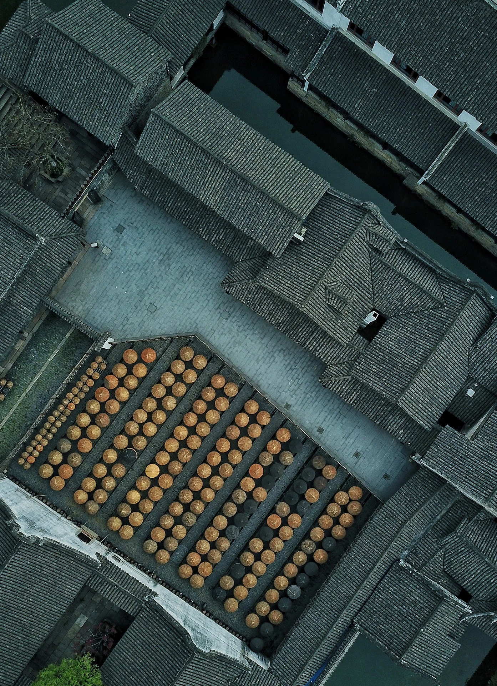

El uso de drones en la creación de trailers de películas ha transformado la industria cinematográfica, ofreciendo nuevas posibilidades para capturar escenas espectaculares. Con cámaras de alta calidad, los drones permiten a los cineastas obtener tomas únicas y dinámicas que enriquecen la narrativa visual.
Uno de los principales beneficios es la capacidad de capturar tomas aéreas impresionantes. Estas vistas panorámicas aportan un valor añadido a los trailers, atrayendo a la audiencia con escenas visualmente cautivadoras que destacan la escala y la belleza de las locaciones.
Los drones también reducen significativamente los costos de producción. Tradicionalmente, las tomas aéreas requerían el uso de helicópteros o grúas, implicando altos gastos en alquiler de equipos y personal especializado. Los drones son más económicos y accesibles, permitiendo a producciones de todos los tamaños acceder a estas técnicas.
La flexibilidad y rapidez que ofrecen los drones son otro punto a favor. Pueden ser desplegados rápidamente y adaptarse a diferentes condiciones de filmación, lo que agiliza el proceso de producción y permite cumplir con los ajustados cronogramas de los proyectos cinematográficos.
Finalmente, el uso de drones añade un elemento de innovación a la producción de trailers. La incorporación de tecnología avanzada no solo mejora la calidad visual, sino que también transmite una imagen de modernidad y creatividad, capturando el interés del público y generando expectación para la película.
